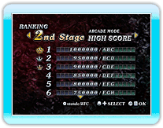
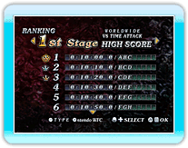

14 |
RANKING MODE |
 |
|
Vous pouvez consulter les scores suivants grâce au RANKING MODE.
● Score total pour le STORY MODE
● Meilleurs scores pour chaque niveau de
● Meilleurs scores pour chaque niveau du
(Appuyez sur
● Votre meilleur score obtenu pour chaque niveau en ARCADE MODE et les scores des 30 joueurs les plus proches.
● Votre meilleur score obtenu pour chaque niveau en VERSUS MODE et les scores des 30 joueurs les plus proches. Lorsque le classement VERSUS MODE est affiché, vous pouvez changer entre les catégories WORLD * En VERSUS MODE, vous ne pouvez enregistrer votre meilleur score qu'au classement connexion Wi-Fi Nintendo. * L'enregistrement au classement connexion Wi-Fi Nintendo n'est pas obligatoire. 
● Site Internet WiiWare de Hudson
● Conduite des opérations |
 |
 |
 |